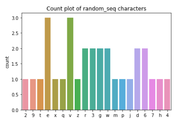
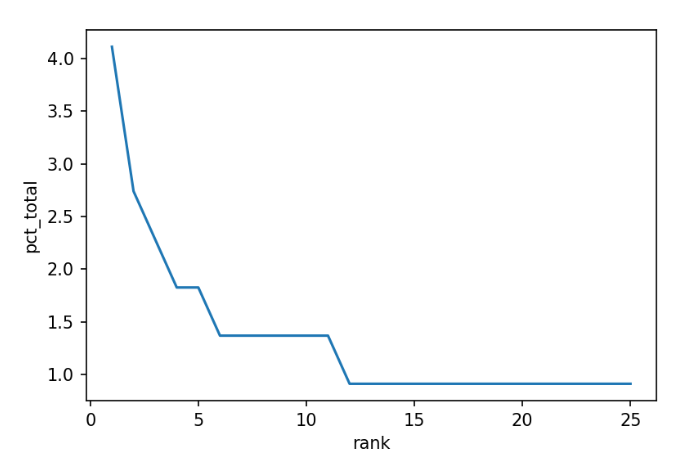

Module 1: Natural Language Processing - Introduction
Module Overview
Natural Language Processing (NLP) is a field of artificial intelligence that focuses on enabling computers to understand, interpret, and generate human language. In this module, we'll explore the foundational concepts of NLP, including text preprocessing techniques that are essential for any text-based analysis. We'll learn how to tokenize text, remove stop words, and apply stemming or lemmatization to prepare text data for more advanced NLP applications.
Learning Objectives
- Tokenize Text
- Remove Stop Words From a List of Tokens
- Stem and Lemmatize Text
Objective 01 - Tokenize Text
Overview
What is a token?
As we read in the introduction, natural languages are semi-structured and follow the rules
concerning using the different parts of the language. Therefore, almost all natural language
speakers have a basic understanding of the parts of language and how to use them. But, to analyze
text using computer programs, we need to format the text to make sense to the program.
In Natural Language Processing, one of the first steps when analyzing text is to “tokenize” or separate the text into tokens. A token is a unit of text that has some meaning. For example, we can break a long text string down into sentences (sentence tokens) or words (word tokens). The process of splitting text into smaller pieces is called tokenization.
A typical text document contains alphanumeric characters, punctuation, and spaces and words with both upper- and lower-case letters. Attributes of “good” tokens include words in the same case (lower-case is preferred) with only alphanumeric characters.
It's also essential to store tokens in a form that can iterate over, including a string, list, or pandas series.
Tokenization by Character
We'll start with a straightforward example of a list of characters in a string. What would be the natural way to break this string down into tokens?
string = '29texqevzr3gwvmrpjvde637h4gwd6'In the above example, the useful unit for analysis would be a single character, as there are no words or sentences in the string of characters. We can use the Python list() constructor to tokenize this string.
# Use the list() constructor to tokenize
tokens = list(string)
# Look at the first 10 tokens
print(tokens[:10])['2', '9', 't', 'e', 'x', 'q', 'e', 'v', 'z', 'r']Our tokens are already “good”: they are all in the same case, they don't contain any non-alphanumeric characters, and are in an iterable data structure.
Tokenization by word
We'll look at a sample of words and enumerate them. A string object in Python is already iterable. However, the item you iterate over is a character, not a token. But, if you think about a sentence composed of words, there are spaces between each word. Fortunately, Python comes with a method to “split” on whitespace.
# Random sentence
mysentence = 'Last Friday I saw a spotted striped blue worm shake hands with a legless lizard.'
# Split on a space
mysentence.split(" ")['Last',
'Friday',
'I',
'saw',
'a',
'spotted',
'striped',
'blue',
'worm',
'shake',
'hands',
'with',
'a',
'legless',
'lizard.']Token Analysis
Now that we have some tokens, we're ready to move on to the analysis! For example, we might want to learn different things from text, such as the length of the document, the frequency occurrence of certain words, or the sentiment value for each sentence. Since we now have tokens in the appropriate form, we can start to analyze these things.
Counting Token Frequency
In this example, we'll look at how often each character in a sequence or sentence occurs. Then, we can use seaborn to produce a simple count plot quickly.
import seaborn as sns
ax = sns.histplot(tokens)
ax.set_title('Count plot of random_seq characters')

Case Normalization
A common data cleaning task with tokens is to standardize or normalize the case (convert all words to lowercase). Normalizing the case reduces the chance of duplicate records for words with practically the same semantic meaning. You can use either the .lower() or .upper() string methods to normalize the case.
Consider the following example of items typically purchased at a grocery store (we're loading a local file here):
import pandas as pd
grocery = pd.read_csv('grocery_list.csv')
items_list = grocery['items'].tolist()
print(items_list)['apple',
'Apple',
'banana',
'Banana',
'BANANA',
'APPLE',
'tomato sauce',
'Tomato SAUCE',
'TOMATO sauce',
'toothpicks',
'Toothpicks',
'TOOTHPICKS',
'carrots',
'Carrots',
'CARROTS',
'red grapes',
'Red grapes',
'RED grapes',
'RED GRAPES',
'paper towel',
'Paper Towel',
'PAPER TOWEL']
We'll look at the value counts for the items in the list.
# Count the frequency of each item in the list
grocery['items'].value_counts()RED GRAPES 1
tomato sauce 1
TOOTHPICKS 1
Apple 1
Banana 1
Carrots 1
red grapes 1
paper towel 1
toothpicks 1
apple 1
Red grapes 1
Toothpicks 1
banana 1
TOMATO sauce 1
Paper Towel 1
PAPER TOWEL 1
BANANA 1
CARROTS 1
carrots 1
Tomato SAUCE 1
RED grapes 1
APPLE 1
Name: items, dtype: int64
We see many repeat items here because different stores have different ways of listing the label for
their items. In this case, we would like to normalize the case for each of the items. Python has
several helpful string methods to help with this, namely .lower(). We'll use the pandas
.apply()
method on the items column.
# Create lower case items
grocery['items'] = grocery['items'].apply(lambda x: x.lower())
# Re-do the value counts
grocery['items'].value_counts()red grapes 4
banana 3
tomato sauce 3
apple 3
carrots 3
toothpicks 3
paper towel 3
Name: items, dtype: int64
That's better; we now have more useful information about the items on the list after just putting all items in lower case.
Alphanumeric Characters
When analyzing text, we only want letters and numbers. Everything else is probably noise: punctuation, unneeded whitespace, and other notation. So selecting only alphanumeric characters is a little more complicated than our previous example for case normalization.
To do this, we'll need to import the Python base package re (regular expressions). The functions in
the re module need a pattern to compare against. The regex expression pattern you need
for this is
[^a-zA-Z 0-9], which keeps lower case letters, upper case letters, numbers, and single
spaces. We'll
filter out the non-alphanumeric characters with the re.sub() function.
# Random string of characters
string = 'D]ehjZe_*-e!?fdfW)_/zQ2#8*LKH#'
# Import the regular expressions package
import re
# Filter and replace with nothing
re.sub('[^a-zA-Z 0-9]', '', string)
'DehjZeefdfWzQ28LKH'
Follow Along
Processing Raw Text with spaCy
So far, we have used basic Python and the pandas library to process and tokenize our text data. There are many Natural Language Processing Libraries available to process text, tokenization, and many other tasks. The library that we will be using for the majority of our NLP work is spaCy.
SpaCy's data model for documents is unique among NLP libraries. Instead of storing the components of the document repeatedly in various data structures, spaCy indexes components, and stores the lookup information. In other words, spaCy is fast when it comes to working with large-scale data sets. The quickness is why spaCy is more production-grade than a library like Natural Languages Tool Kit (NLTK), another popular NLP library.
Let us now use the spaCy library to process and tokenize a sample text.
# Download spacy module
# If working on Colab, restart runtime after this step
!python -m spacy download en_core_web_lg
import spacy
from spacy.tokenizer import Tokenizer
# Load the pre-trained statistical model for English
import en_core_web_lg
nlp = en_core_web_lg.load()
# Tokenizer
tokenizer = Tokenizer(nlp.vocab)
# Sample text
sample = "They watched the 42 dancing piglets with panda bear tummies in the swimming pool."
# Tokenize and print out list of tokens
tokens = [token.text for token in tokenizer(sample)]
print(tokens)['They',
'watched',
'the',
'42',
'dancing',
'piglets',
'with',
'panda',
'bear',
'tummies',
'in',
'the',
'swimming',
'pool.']
The tokenization produced by spaCy looks pretty similar to our first example, but punctuation has been included.
Challenge
To prepare for the lecture, make sure you have spaCy installed and the en_core_web_lg
statistical
model. Then, using the above example, practice tokenizing some sample text with the spaCy tokenizer.
You can also challenge yourself to create a function that combines some of the above individual steps. For example, create a function that strips out the non-alphanumeric characters and lower-cases the input text.
Resources
Objective 02 - Remove Stop Words From a List of Tokens
Required Resources
Overview
What are stop words?
In the last objective, you probably began to notice that certain words occur a lot more frequently
than others in some of the visualizations. Unfortunately, these words, often called as stop words,
don't convey much meaning in our documents, so we often want to do something about them, either
removing them entirely or excluding them somehow.
English stop words are classified as the following parts of speech: conjunctions, articles, adverbs, and pronouns. Here are some common examples of these words:
| part of speech | examples |
|---|---|
| articles | a, an, the |
| adverbs | very, really, almost |
| pronouns | she, her, they, them |
| conjunctions | and, or, but |
Follow Along
Using spaCy to remove stop words
Natural language processing libraries come with lists of pre-defined stop words, so there's no need to do this manually. Instead, let's take a look at the common stop words that came with our spaCy model.
import spacy
from spacy.tokenizer import Tokenizer
# Load the pre-trained statistical model for English
import en_core_web_lg
nlp = en_core_web_lg.load()
# spaCy's default stop words
stop_list = list(nlp.Defaults.stop_words)
print("The number of stop words: ", len(stop_list))
print("The first 10 stop words are: ", stop_list[:10])
The number of stop words: 326
The first 10 stop words are: ['what', 'everything', 'few', "'d", 'beside', 'beyond', 'nobody',
'even', 'latter', 'where']
There are over three hundred stop words in the default list from spaCy. The next part of the process is removing them. We need some text to practice on for this example. The Gutenberg Library is an excellent resource for a wide variety of texts for practicing NLP tasks. For this example, we copied a few paragraphs of “Alice in Wonderland” by Lewis Carroll and saved the plain text file locally.
After opening the file and reading the raw text into a string, we can use spaCy to process and tokenize the text. Then we'll take out the stop words.
# Open and save the raw files
with open('wonderland.txt', encoding='utf-8', errors='ignore') as f:
wonder_raw = f.read()
# Parse the raw text
doc = nlp(wonder_raw)
print('The type of output is: ', type(doc))
print(doc[:100])
The type of output is: <class 'spacy.tokens.doc.Doc'>
Alice was beginning to get very tired of sitting by her sister on the bank, and of having nothing to do: once or twice she had peeped into the book her sister was reading, but it had no pictures or conversations in it, “and what is the use of a book,” thought Alice “without pictures or conversations?” So she was considering in her own mind (as well as she could, for the hot day made her feel very sleepy and stupid), whether the pleasure
# Remove the stop words and the punctuation
# Initialize a list to hold the tokens
tokens_nostop = []
# Loop over each token in the document (doc)
for token in doc:
if not token.is_stop and not token.is_punct:
tokens_nostop.append(token.text.lower())
# Print the first 50 tokens
print(tokens_nostop[:50])
['\ufeff', '\n', 'alice', 'beginning', 'tired', 'sitting', 'sister', 'bank', 'having', 'twice',
'peeped', 'book', 'sister', 'reading', 'pictures', 'conversations', 'use', 'book', 'thought',
'alice', 'pictures', 'conversations', 'considering', 'mind', 'hot', 'day', 'feel', 'sleepy',
'stupid', 'pleasure', 'making', 'daisy', 'chain', 'worth', 'trouble', 'getting', 'picking',
'daisies', 'suddenly', 'white', 'rabbit', 'pink', 'eyes', 'ran', 'close', 'remarkable', 'alice',
'think', 'way', 'hear']The tokens now don't include either punctuation or stop words. To examine the distribution of the tokens a little further, we can look at the word counts. First, using a Counter method, we'll count the number of occurrences in the list of tokens and store that information in a dictionary. Then, we can convert the dictionary to a dataframe and use the familiar pandas methods to sort and plot the word frequency.
from collections import Counter
import pandas as pd
# Sum up the word counts and store in a dict
tokens_dict = Counter(tokens_nostop)
# Convert to a DataFrame
tokens_wc = pd.DataFrame(list(tokens_dict.items()), columns = ['word','count'])
# Rank the words by how frequently they occur
tokens_wc['rank'] = tokens_wc['count'].rank(method='first', ascending=False)
# Count all of the words in the document and calculate their percentage
total = tokens_wc['count'].sum()
tokens_wc['pct_total'] = tokens_wc['count'].apply(lambda x: (x / total)*100)
# Take a look at the DataFrame with new results
tokens_wc.head(10)
| word | count | rank | pct_total | |
|---|---|---|---|---|
| 0 | 1 | 40.0 | 0.456621 | |
| 1 | \n | 1 | 41.0 | 0.456621 |
| 2 | alice | 9 | 1.0 | 4.109589 |
| 3 | beginning | 1 | 42.0 | 0.456621 |
| 4 | tired | 1 | 43.0 | 0.456621 |
| 5 | sitting | 1 | 44.0 | 0.456621 |
| 6 | sister | 2 | 12.0 | 0.913242 |
| 7 | bank | 1 | 45.0 | 0.456621 |
| 8 | having | 1 | 46.0 | 0.456621 |
| 9 | twice | 1 | 47.0 | 0.456621 |
It's essential to look at what percentage of the total each word makes up. We can do this with a simple line plot, where the 'rank' of the word is plotted against the 'pct_total' from our DataFrame. Since the top-ranked words make up a significant percentage than the rest of the words, let's look at just the top 25.
import matplotlib.pyplot as plt
import seaborn as sns
# Create a new DataFrame of the top 25 ranked words
tokens_wc_top25 = tokens_wc[tokens_wc['rank'] <= 25]
# Line plot of rank vs. percent total
sns.lineplot(x='rank', y='pct_total', data=tokens_wc_top25)
plt.show()

The five most common words make up a large percentage of the document; in this case, we could do a quick “eyeball” estimation and say that about 15% of the document is composed of five words. However, since we're data scientists, let's look at another way to visualize the word counts.
The squarify module returns a treemap of the input values. The size of the square (or
rectangle) is
mapped to its value. In this case, the larger the percentage, the larger the rectangle on the plot.
import squarify # To install: pip install squarify
squarify.plot(sizes=tokens_wc_top25['pct_total'], label=tokens_wc_top25['word'], alpha=0.8)
plt.axis('off')
plt.show()

There are still a few words in this plot that might not add a lot to our analysis. In this case, we might want to remove 'Alice and 'rabbit'; we already know our book involves these characters.
In spaCy, we can customize our stop words list by adding additional words.
# Add additional stop words to the default list
STOP_WORDS = nlp.Defaults.stop_words.union(['alice', 'rabbit'])
# Initialize a list to hold the tokens
tokens_nostop_add = []
# Loop over each token in the document (doc)
for token in doc:
if token.text.lower() not in STOP_WORDS and not token.is_punct:
tokens_nostop_add.append(token.text.lower())
# Sum up the word counts and store in a dict & DataFrame
tokens_dict_add = Counter(tokens_nostop_add)
tokens_wc_add = pd.DataFrame(list(tokens_dict_add.items()), columns = ['word','count'])
# Rank the words & create a percentage column
tokens_wc_add['rank'] = tokens_wc_add['count'].rank(method='first', ascending=False)
total = tokens_wc_add['count'].sum()
tokens_wc_add['pct_total'] = tokens_wc_add['count'].apply(lambda x: (x / total)*100)
# Create a new DataFrame of the NEW top 25 ranked words
tokens_wc_add_top25 = tokens_wc_add[tokens_wc_add['rank'] <= 25]
squarify.plot(sizes=tokens_wc_add_top25['pct_total'], label=tokens_wc_add_top25['word'], alpha=0.8)
plt.axis('off')
plt.show()

We can see that the common words 'Alice and 'rabbit' are no longer in the tokens.
Statistical trimming
But, there are additional ways to remove common words from a document. What if we looked at the distribution of word counts and then just removed or “trimmed” the most common words. We want to preserve the words that give us the most variation in the text.
We already looked at the plot of the most common words in our text. Instead, let's look at the least common words and the frequency with which they appear.
# Create a new DataFrame of the bottom 25 words
tokens_wc_end25 = tokens_wc.tail(25)
squarify.plot(sizes=tokens_wc_end25['pct_total'], label=tokens_wc_end25['word'], alpha=0.8)
plt.axis('off')
plt.show()

Challenge
Now it's your turn to try removing stop words from a text. First, follow the example method above and use the default stop words available with spaCy. Next, create a squarify plot and then see if additional words might be good to remove, depending on the type of analysis you would like to do. You can find many example texts available at Project Gutenberg.
Additional Resources
Objective 03 - Stem or Lemmatize Text
Overview
In any natural language, many words share the same root word. For example, think about the root word 'auto,' which means self. So when combined with other words, we have automatic, automobile, autocrat, and many others. Or the word 'active.' We can't reduce these words down any further and still have meaning. But these words are also stems. So we can add endings (automatically, automobiles, activated) or a prefix (inactive), or both (deactivated).
This process is called inflection in language, where you can modify a word for different uses, including tense, case number, and gender. But inflected words still retain their core meaning.
In English (and other languages), you apply inflection to a verb and receive verb conjugation. We modify verbs for person, tense, and number. An example verb conjugation for tense would be: work, worked, am working.
Nouns are inflected for number (plural) by changing the suffix: cat-cats, wolf-wolves, puppy-puppies. To make things confusing, sometimes more than the suffix changes, like for goose-geese or mouse-mice.
We use stemming or lemmatization in natural language processing to trim our words down to the root word or stem. As we can see from the inflection examples, language is complicated, and there are no simple rules to do this trimming. Let's look in more detail at the process to get a better idea of how it works.
Stemming
As we've already seen from the inflection examples above, the process of stemming can involve simple actions. Some of these actions are removing “s” or “es” from the end of a noun or “ed” or “ing” from the end of a verb.
These rules aren't comprehensive but are a good starting place. Fortunately, there is a lot of research on stemming algorithms. For more information on various stemming algorithms, check out the resources listed below.
Let's look in more detail at the Porter stemmer. It works by using an explicit list of suffixes and a list of criteria showing which suffix to remove. The stemmer works in phases where each phase follows a particular rule, depending on the end of the word. For example, the first phase uses the following “rule group.”
| Rule | Example | ||||
|---|---|---|---|---|---|
| SSES | → | SS | caresses | → | caress |
| IES | → | I | ponies | → | poni |
| SS | → | SS | caress | → | caress |
| S | → | cats | → | cat |
We can see that the resulting stem on the right doesn't have to be an actual word (“poni”) because we can still understand the meaning. Here's an example of what some text looks like after going through the Porter stemmer.
Sample text
Such and analysis can reveal features that are not easily visible from the variations in the
individual genes and can lead to a picture of expression that is more biologically transparent and
accessible to interpretationPorter stemmer
such an analysi can reveal featur that ar not easili visibl from the variat in the individu gene and
can lead to a pictur of express that is more biolog transpar and access to interpretA Porter stemmer can be implemented in Python with the Natural Languages Toolkit (NLTK), but we will be working with the spaCy library for this part of the course. However, spaCy doesn't do stemming out of the box but instead uses a different technique called lemmatization which we'll discuss next.
Lemmatization
As you read through the example sentence after stemming, it will seem like the words are literally “chopped off.” The job of a stemmer is to remove the endings, which is essentially what the Porter stemmer example above shows. This stemming works well when the result doesn't need to be human-readable. Stemming is helpful in search and information retrieval applications; also, it's fast.
Lemmatization, on the other hand, is more methodical. The goal is to transform a word into its base form called a lemma. First, plural nouns with uncommon spellings get changed to the singular tense. Next, verbs are all transformed to the transitive: an action word with something or someone receiving the action such as paint (transitive verb) the canvas (object).
However, this type of processing has a computational cost. In this case, spaCy does a pretty good job of lemmatizing.
Follow Along
Let's use some of our example text from the previous objective to apply lemmatization to.
# Import the library
import spacy
# Create an example sentence
sent = "The rabbit-hole went straight on like a tunnel for some way, and then dipped suddenly down, so suddenly that Alice had not a moment to think about stopping herself before she found herself falling down a very deep well."
# Load the language library
nlp = spacy.load("en_core_web_lg")
doc = nlp(sent)
# Lemma Attributes
for token in doc:
print(token.text, " --> ", token.lemma_)
The --> the
rabbit --> rabbit
- --> -
hole --> hole
went --> go
straight --> straight
on --> on
like --> like
a --> a
tunnel --> tunnel
for --> for
some --> some
way --> way
, --> ,
and --> and
then --> then
dipped --> dip
suddenly --> suddenly
down --> down
, --> ,
so --> so
suddenly --> suddenly
that --> that
Alice --> Alice
had --> have
not --> not
a --> a
moment --> moment
to --> to
think --> think
about --> about
stopping --> stop
herself --> -PRON-
before --> before
she --> -PRON-
found --> find
herself --> -PRON-
falling --> fall
down --> down
a --> a
very --> very
deep --> deep
well --> well
. --> .
And there we go! We have tokenized and lemmatized our first sentence in spaCy. The lemmas are much easier to read than the stemmed text. In this particular text, there aren't a lot of words that are lemmatized; we can see falling becomes fall and went becomes go. But otherwise, there aren't a lot of changes in this particular text.
To make this process more efficient, let's put these various text normalizing functions in another function.
# Tokenizing and lemmatizing in one function
def get_lemmas(text):
# Initialize a list
lemmas = []
# Convert the input text into a spaCy doc
doc = nlp(text)
# Remove stop words, punctuation, and personal pronouns (PRON)
for token in doc:
if not token.is_stop and not token.is_punct and token.pos_ != 'PRON':
lemmas.append(token.lemma_)
# Return the lemmatized tokens
return lemmas# Example text (https://en.wikipedia.org/wiki/Geology)
geology = [
"Geology describes the structure of the Earth on and beneath its surface, and the processes that have shaped that structure.",
"It also provides tools to determine the relative and absolute ages of rocks found in a given location, and also to describe the histories of those rocks.",
"By combining these tools, geologists are able to chronicle the geological history of the Earth as a whole, and also to demonstrate the age of the Earth.",
"Geology provides the primary evidence for plate tectonics, the evolutionary history of life, and the Earth's past climates."
]# Find the lemmas for each sentence in the above text
geology_lemma = [get_lemmas(sentence) for sentence in geology]
print(geology_lemma)
[['geology', 'describe', 'structure', 'Earth', 'beneath', 'surface', 'process', 'shape', 'structure'], ['provide', 'tool', 'determine', 'relative', 'absolute', 'age', 'rock', 'find', 'give', 'location', 'describe', 'history', 'rock'], ['combine', 'tool', 'geologist', 'able', 'chronicle', 'geological', 'history', 'Earth', 'demonstrate', 'age', 'Earth'], ['geology', 'provide', 'primary', 'evidence', 'plate', 'tectonic', 'evolutionary', 'history', 'life', 'Earth', 'past', 'climate']]
Compared to the original sentences, we see many words that have changed, either by becoming singular or changing the tense: processes to process, shaped to shape, combining to combine.
Challenge
Using the get_lemmas() function above, complete the following text normalization steps
on
any text
you choose. The text can be something more technical from Wikipedia or your favorite book.
- tokenization
- removing stop words
- remove pronouns (part of speech)
- lemmatization
Compare your original text with the lemmatized version and see if you can notice any patterns.
Resources
Guided Project
Open DS_411_Text_Data_Lecture_GP.ipynb in the GitHub repository to follow along with the guided project.
Module Assignment
Analyze coffee shop reviews to identify attributes of the best and worst rated establishments. Apply text preprocessing techniques including tokenization, lemmatization, and custom stopword removal to clean the data and create visualizations showing token frequency patterns across different star ratings.
Assignment Solution Video
Additional Resources
NLP Libraries and Text Processing
- spaCy Linguistic Features Documentation
- NLTK Book: Processing Raw Text
- Scikit-Learn: Text Feature Extraction